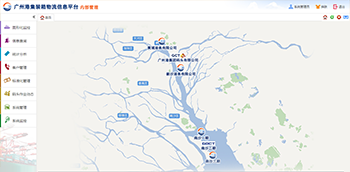
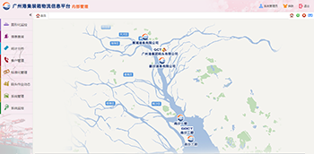
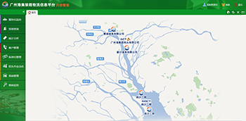
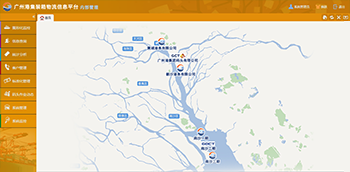

<div>
    <table width="90%" border="0" align="center" cellpadding="0" cellspacing="0" id="colorChange">
  <tr>
    <td width="50%" align="center">&nbsp;</td>
    <td width="50%" align="center">&nbsp;</td>
  </tr>
  <tr>
    <td align="center"></td>
    <td align="center"></td>
  </tr>
  <tr>
      <td height="50" align="center"><input type="radio" name="color" id="metro-white" value="metro-white" checked="true">
      清纯</td>
    <td align="center"><input type="radio" name="color" id="metro-pin" value="metro-pink">
    浪漫</td>
  </tr>
  <tr>
    <td align="center"></td>
    <td align="center"></td>
  </tr>
  <tr>
    <td height="50" align="center"><input type="radio" name="color" id="metro-blue" value="metro-blue">
      智慧</td>
    <td align="center"><input type="radio" name="color" id="metro-green" value="metro-green">
      青春</td>
  </tr>
  <tr>
    <td align="center"></td>
    <td align="center">&nbsp;</td>
  </tr>
  <tr>
    <td height="50" align="center"><input type="radio" name="color" id="metro-orange" value="metro-orange">
    收获</td>
    <td align="center"><input type="button" name="button" id="button" onclick="changeThemes()" value="保存"></td>
  </tr>
</table>
    <script type="text/javascript">
    function changeThemes(){
        var theme=$("input[type='radio']:checked").val();
        $('link').eq(0).attr('href', '../css/themes/' + theme + '/easyui.css');
        $('link').eq(1).attr('href', '../css/themes/' + theme + '/hdMain.css');
        $('link').eq(2).attr('href', '../css/themes/' + theme + '/hdStyle.css');
        $.ajax({
                method: "GET",
                url: "../webresources/login/AuthUser/updateUserStyleCss/" + theme,
                dataType: "json",
                success: function() {

                }
            });

    }
    $(document).ready(function () {
        var defaultSkin=$.main.loginOper.skin;
        $("input:radio[value="+defaultSkin+"]").attr('checked','true');
       
    });


      
    </script>
</div>